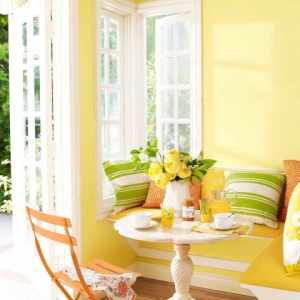

ოთახის კედლების დასრულების მასალის არჩევისას შეიძლება გამოყენებულ იქნას სხვადასხვა კრიტერიუმები. ზოგიერთი ადამიანი ზრუნავს ვიზუალურ ეფექტზე, ზოგს ხელმძღვანელობს გამოყენებული პროდუქტის კომფორტით და ხარისხით. მაგრამ ნებისმიერ შემთხვევაში, თითოეული ოთახი თავისებურად გამოხატავს ფერს და მასალას. ამის მთავარი მიზეზი გეოგრაფიული მიმართულებებია - ჩრდილოეთისა და სამხრეთისკენ მიმართული ოთახები მზის შუქს განსხვავებულად იღებენ. აქედან გამომდინარე, აუცილებელია ფრთხილად მივუდგეთ ფერის არჩევანს ნათელი ან დაჩრდილული ოთახისთვის.
საღებავის ფერის არჩევანი
ბევრს სურს, რომ ოთახი იყოს რაც შეიძლება ნათელი დღის განმავლობაში, მაგრამ მზის სიმრავლის გამო, ზოგიერთი ფერი მოსალოდნელზე განსხვავებული ფორმით ჩანს. ნათელი, მზიანი ოთახებისთვის, ჩვენ გირჩევთ გამოიყენოთ ნაკლები შემდეგი ფერები:
იისფერი - ბუნებრივ შუქთან ურთიერთქმედების შედეგად ოთახში შეიძლება შეიქმნას ულტრაიისფერი ეფექტი და ამით სივრცეში მძიმე ატმოსფერო შეიქმნას;
შავი - არ იფიქროთ, რომ მზე შეამსუბუქებს შავის წონას. შავი ოთახი შეიძლება უცნაურად გამოიყურებოდეს ბუნებრივ ყვითელ შუქზე.

ფერების ოპტიმალური შერჩევისთვის გასათვალისწინებელია, რომ მზიანი ოთახი პრაქტიკულად არ იღებს ცის მიერ გამოსხივებულ ლურჯ შუქს, შეიძლება ჩაითვალოს, რომ ბუნებრივი თეთრი, კრემისფერი და მოყვითალო ფერები უკვე არსებობს ასეთ სივრცეებში. ცივი ფერების გამოყენება, რომლებიც შეიძლება ამ ჩრდილებთან ერთად იყოს, უკეთეს შედეგს გამოიწვევს.
მიუხედავად ამ ყველაფრისა, თითოეული ადგილი თავისებურად უნიკალურია და გემოვნება განსხვავებულია. მაგრამ ერთი რამ დანამდვილებით შეიძლება ითქვას, რაც არ უნდა მკაცრი იყოს მზე, „პინგვინის“ საღებავებით შეღებილი კედლები მრავალი წლის განმავლობაში მოგემსახურებათ ორიგინალური იერსახის დაკარგვის გარეშე.
კონტაქტი
+995 597 68 90 90
+99412 502 45 50
Paatarekhviashvili15@gmail.com
ცენტრალური ოფისი - ბადამდარის გზატკეცილი. 27, ბაქო, აზერბაიჯანი